Merhaba, umarım bunlar işine yarar.
BLDC motor sürücü tasarımı ve devre şeması
Lisans bitirme projesi olarak BLDC motor sürücü tasarımı seçtik. Öncelikle BLDC nedir?
BLDC BrushLess Direct Current kelimesinin kısaltmasıdır. Standart motorlarda bulunan fırçalar
bu tip motorlarda bulunmaz. Sargı uçları direkt olarak dış dünya ile bağlantıya sahiptir. Fırçalı
motorlarda fırçanın görevinin sürücümüz yapmaktadır. BLDC motorlarda dış dünyaya çıkan 3 adet uç bulunur.
Bu uçları doğru sıralama ile enerjilendirdiğimiz zaman ise rotor istediğimiz yönde hareket etmeye başlar.
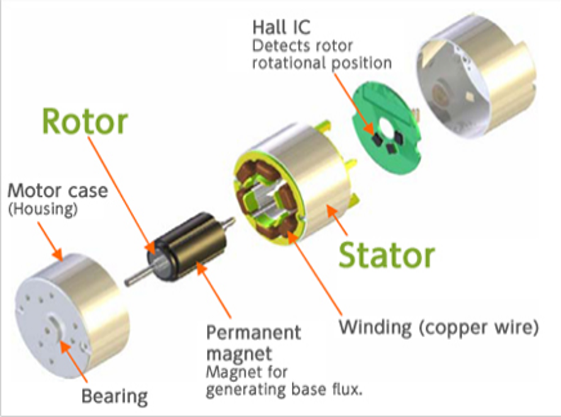
Peki diğer motorlardan farkı nedir, neden bu tip motorlar kullanılır?
Fırçalı motorlarda dış dünya ile sargı arasında kömür adı verilen bir parça yardımı ile enerjilendirilir.
Bu kömür kollektöre sürtüp sargılara enerji verir. Sürtünmeye bağlı olarak da zamanla aşınır ve görevini yapamayacak duruma gelir.
Aynı zamanda aşınan kömürün tozları kollektörü doldurup, kollektörün iletkenlik özelliğinin azalmasına yol açar. BLDC motorlarda ise
bu tarz sorunlar olmadığı için daha az bakım ile daha uzun süre çalışabilir. Aynı zamanda fırçanın sürtünmesi olmadığı için daha az
kayıba sahiptir. Bu bahsettiğim kısım BLDC motorun artı yönleriydi. Her güzelin bir kusuru olduğu gibi BLDC motorların kusuru ise daha
karmaşık sürme yöntemine sahip olması. Fırçalı motorları direkt enerji verip çalıştırabilirken BLDC motorlarda ise sargıların enerjilendirilme
sırasını ayarlayabilmek için bir sürücüye ihtiyaç duyar.
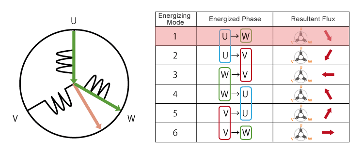
Motordan dış dünyaya 3 adet uç çıkar. Bunlar "U", "V", "W" uçlarıdır. Bu uçların enerjilendiirilme sırası ile motor harekete başlar.
Bu enerjilendirme işlemini ise mosfet adı verilen elektronik anahtar ile yapılır. Mosfetin tetik ucuna uygulanan gerilim ile daha yüksek gerilimleri
kontrol ederek açıp kapatabiliriz.
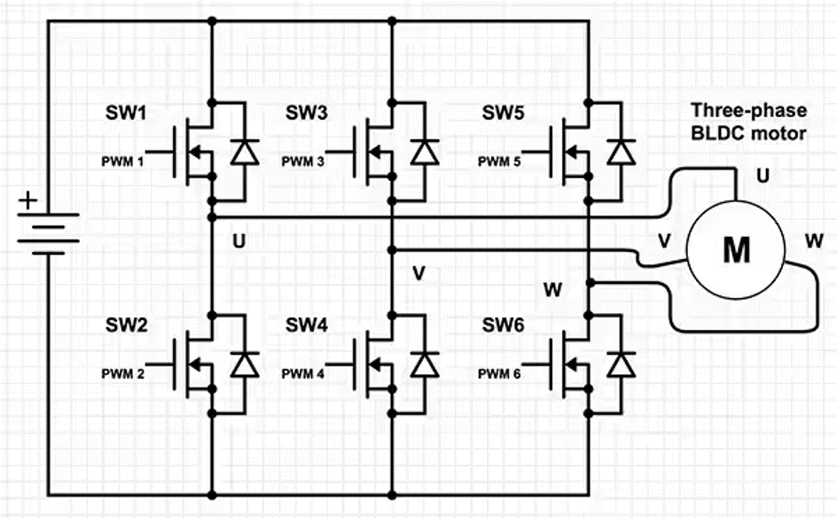
Mosfetler PWM ile açılıp kapatılıyor. Yapılan tasarımda anahtarlama frekansı olarak 21 KHz kullanıldı. Bu değerin seçilme sebebi tipik olarak çoğu
sürücülerde bu değerin kullanılmasıdır. SW1, SW3, SW5 adlı mosfetler high side adı verilen gruptur. Bunun sebebi N kanal mosfetlerin genel kullanım
şeklinin aksine yük bara ile drain arasında değil source ile toprak arasındadır. SW2, SW4, SW6 ise low side adı verilen grubun mosfetleridir. Kullandığımız
sürme yönteminde high side pwm ile enerjilendirilirken, low side ise logic 1-0 olarak enerjilendiriliyor.
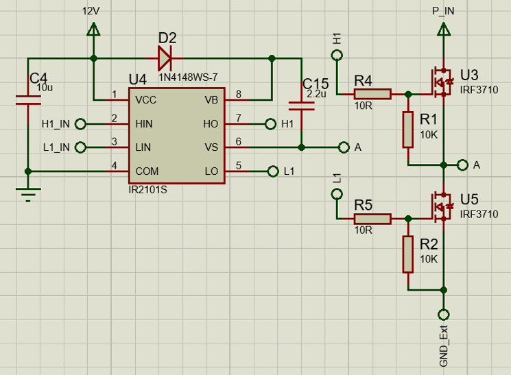
Low side mosfetleri rahatlıkla enerjilendirebiliyoruz ama high side kısmı ise maalesef direkt çalıştıramıyoruz. Bunun sebebi ise mosfetin çalışması için gate
voltajının source voltajından yüksek olması gerekir. High side mosfetlerin source ucu toprağa bağlı olmadığı için P_IN gerilimi aynı şekilde source ucunda görünür.
Bootstrap adı verilen method ile gate ucuna gelen gerilim P_IN kısmından daha yüksek bir seviyeye çıkarılır. Bu yükseltme işlemini ise bootstrap kondastörü adı verilen
kondastör sayesinde yapar. Daha detaylı bilgi için
bu yazıyı okuyabilirsiniz.
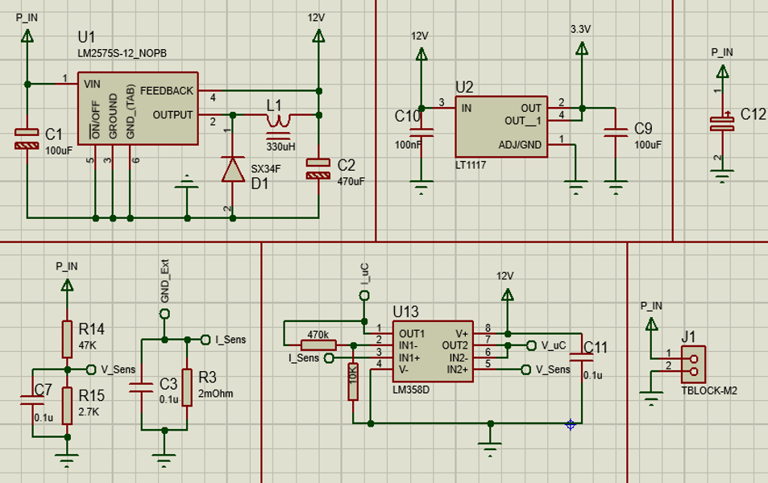
Sürücünün üzerindeki gerekli birleşenlerin çalışması için gerekli voltajları sağlamak için lineer voltaj regülatörleri kullandık. Mosfet sürücü ve opampın beslemesini 12V
regülatör ile sağladık. 7812 tarzı basit regülatörler yerine LM2575 kullanma amacımız daha yüksek gerilimler altında çalışmak. 7812 ile 35 volta kadar olan gerilimler ile
çalışabilirken LM2578 entegresinin HV versiyonu ile 65 volta kadar olan gerilimleri 12 volta düşürebiliyoruz. Sürücümüzün kontrol birimi olan STM32 için ise gerekli olan gerilimi
LT1117 adı verilen basit bir regülatör ile sağladık. Giriş voltajı olarak bir önceki entegreden çıkan 12 voltu kullandığımız için yüksek gerilim değerleri ile çalışan entegreye ihtiyaç
duymadık. C12 kondastörü ise anlık akım değişimlerinde kaynak voltajının çökmesini ve tam olarak regüle edilmemiş kaynaklar ile çalışırken oluşan gerilim dalgalanmalarını önlemek için
kullandık. Sol atta bulunan R14 ve R15 gerilim bölücüsü ile ana besleme gerilimimizi işlemci vasıtasıyla okuyup kullanıcıyı bilgilendirmeyi amaçladık. Yanında bulunan R3 direnci ile motorun
çektiği akımı okuduk. Bir yanda bulunan opamp ile ise bir önceki bölümde okuduğumuz gerilim ve akım değerlerini işlemciye girmeden önce bazı yükseltme ve empedans düzeltme işlemlerine soktuk.
Bunun amacı ise Okuduğumuz akım değerinin çok düşük olması. Devreden geçen 100 mA akım değeri R3 direnci üzerinde 0,2 mV değerinde bir gerilim oluşturuyor ve biz bu değeri işlemcimize gönderirsek
işlemcimiz bir şey anlamayacak. Bunun sebebi ise işlemcimizde ADC olarak 12 bit ADC kullanmamız. ADC ise kısaca dışarıdan gelen gerilimi belli bir aralığa göre değer vermesi. Kullandığımız işlemci
ADC olarak 3,3 voltu 12 bite yani 4095 eş parçaya ayırması. Bu işlemler sonucu eğer işlemcimize 0,8 mV gerilim değeri verirsek ADC kısmı bunu 0-4095 aralığı arasında 1 değerine eşitleyecek. Hatırlarsanız
eğer biz 100 mA akım akıtırsak R3 üzerinde 0,2 mV gerilim oluşacaktı. Bu değeri ise ADC'nin okuyabildiği minimum değerinde altında olduğu için 0 olarak görecekti. Bu yüzden opamp ile yaklaşık 48 kat yükseltip
işlemciye gönderdik. Aynı durumda 0,2 mV yükseltilerek 9,6 mV değeri ile işlemciye girecek ve 12 değerini alacak. Yapılan işlemi tersine çeivirerek R3 direnci üzerinden geçen akımı öğrenebileceğiz.
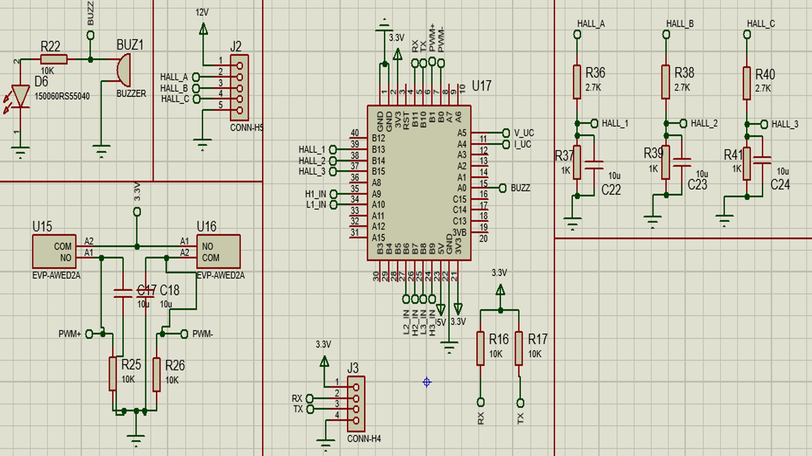
Sol üstte kullanıcıya sesli ve görsel olarak uyarıları göstermek için kullandığımız LED ve buzzer bulunmaktadır. Alt kısımda ise butonlar bulunmaktadır. Bu butonlar ile klasik olarak potansiyometre
ile yapılan hız kontrolünü yapmayı amaçladık. Orta bölümde denetleyici kartımız olan STM32'nin mikroişlemcisi gözükmektedir. Sağ üstte ise Hall sensör uçları bulunmaktadır.
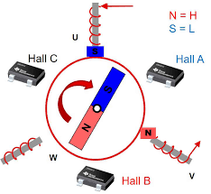
Peki Hall sensör nedir, neden kullanılır?
Biz motor sargı uçlarını sırayla tetikliyoruz ama ya rotor olası gereken konuma daha gelmediyse? Fırçalı motorlarda kollektör rotora bağlı olduğu için eğer rotor olması gereken pozisyona gelmediyse bir sonraki
enerjilendirmeye geçmez ama BLDC'de ise biz rotor dönsede dönmesede sargıları tetikleyebiliriz ama bunu yapınca rotor dönmediği için bir işimize yaramayacak. BLDC motorlarda rotor mıknatıs ise kaplıdır.
Hall sensör ise üzerine gelen manyetik alana göre 1 veya 0 çıkışı verir. Örneğin resimde "Hall B" adı verilen hall sensör 1 çıkışı verirken "Hall A" ise 0 çıkışı verir. "Hall C" ise üzerinde mevcut bir manyetik alan
olmadığı için önceki durumu tekrar eder. Bu gelen verilere göre rotorun döndüğünü ve bir sonraki anahtarlama işleminin başlaması gerektiğini anlarız.
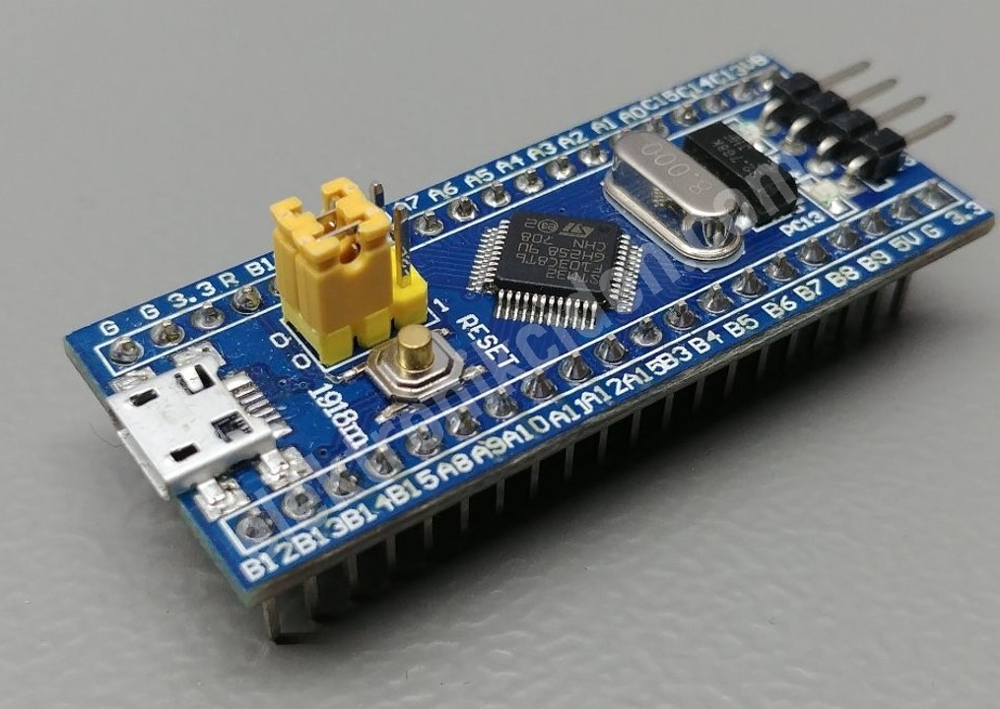
Sürücümüzün kontrolünü sağlayan denetleyici piyasada "BluePill" olarak bilinen STM32 kartıdır. Kartta kullandığımız özellikler ise mosfetleri açıp kapatmak için PWM, gerilim ve akım değerlerini öğrenmek için
ADC, Bilgisayar ile haberleştirmek için UART, veri girişi ve çıkışı yapabilmek için ise GPIO.
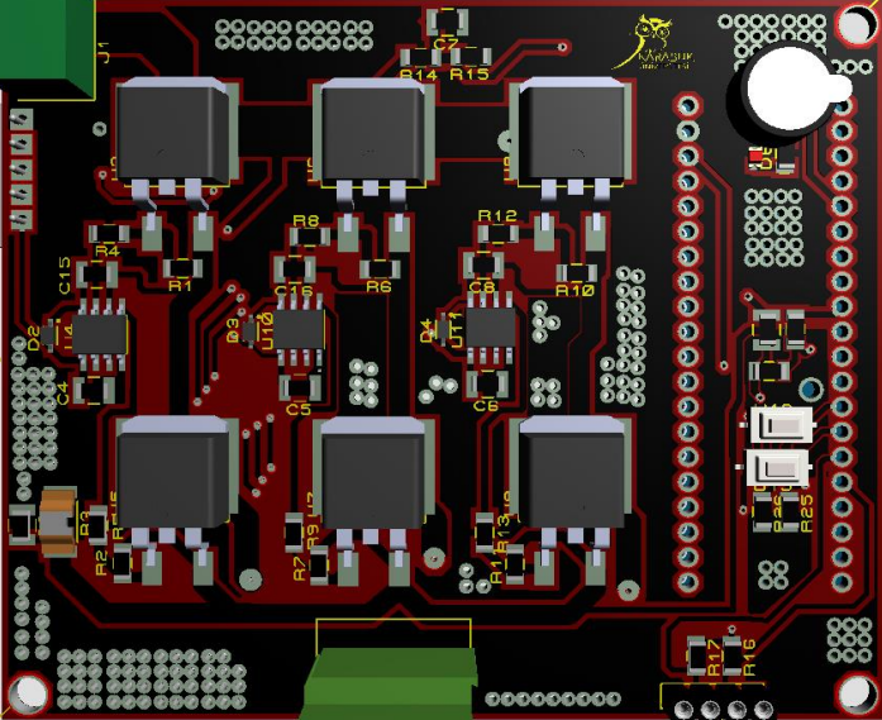
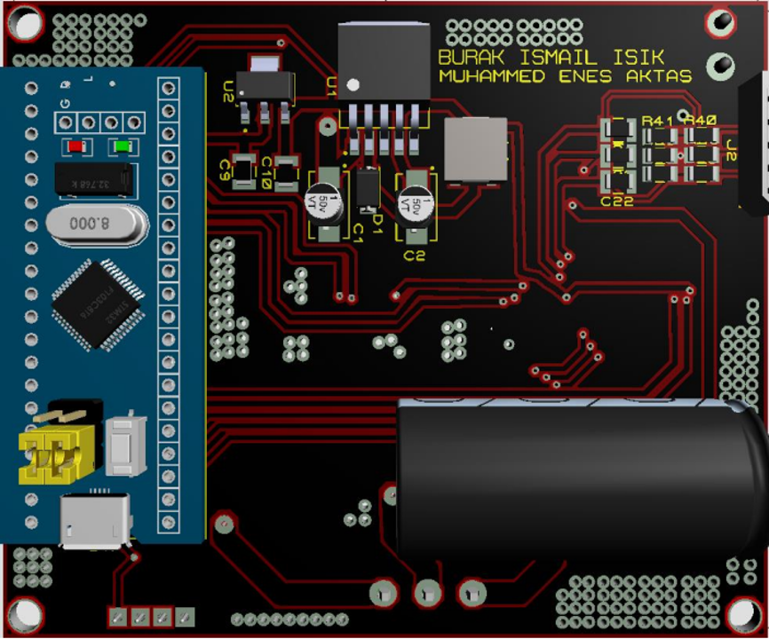
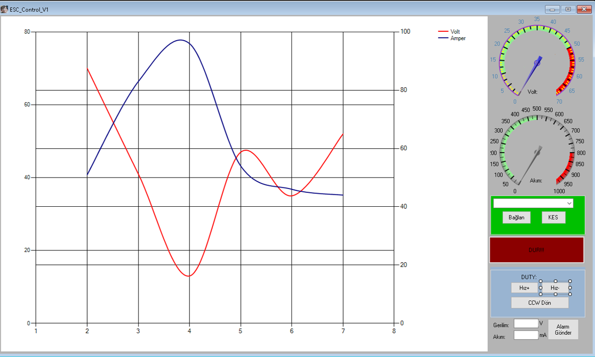
Visual studio üzerinden C# ile tasarladığımız arayüz ile seri port üzerinden aldığımız gerilim, akım, duty değerlerin yanı sıra sürücüye gönderdiğimiz verilen ile motorun hızını artırıp azaltma, dönüş yönü değiştirme,
anlık olarak durdurma ve belirlediğimiz akım ve gerilim değerleri dışına çıkıldığında motru durdurma gibi işlemler yapabiliyoruz.
Şuan mevcutta bulunan sorunlar ise öncelikle ADC ile akım okurken karşımıza çıkıyor.
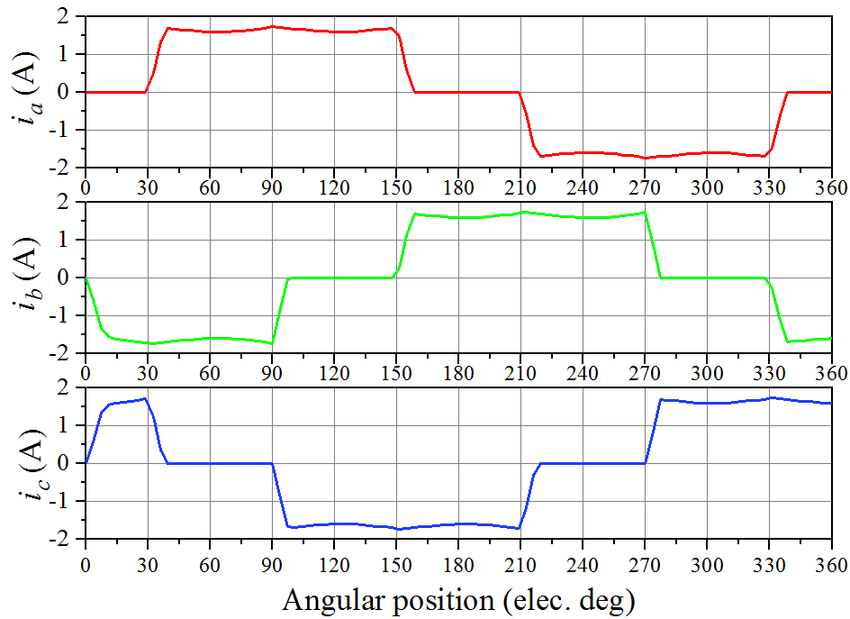
Çekilen akım RMS değer olmadığı için ADC nerede okudu ise gerilim değerimiz o oluyor. Bu yüzden akım 0 ile tepe arasında geziniyor. Bu yüzden arayüzde aşırı akım ayarını istediğimiz gibi yapamıyoruz. Bunun çözümü okuduğumuz
0 dan başlayıp tekrar 0 olasıya kadar bir aralığa kaydetmek ve o aralıktaki en yüksek değeri √2 ile çarpmak yada sıfır geçiş dedektörü kullanmak. C# da aşırı mükemmel olmadığım için bunu yapamadım ama araştırma ile her şey çözülebilir.
2. sorunumuz ise RPM ölçme kısmı. kullandığımız motor 8 kutuplu bu yüzden her 4 elektriksel turda 1 mekanik tur atıyor. Yani 4 kere bütün tetikleme işlemini tamamlarsak motor 1 tur atmış oluyor. Hall sensör değerlerini okuabildiğimiz için
belirlediğimiz hall sensörler aktif olduğunda a değerini 1 arttır dedik ve eğer bu a değeri 100 olursa belirlediğimiz bir değişkeni 1 yap aynı zamanda a değerini 0 yap dedik. Arayüz kısmında ise seri porttan eğer 1 değeri gelirse bir
kronometre başlat dedik. Tekrardan 1 geldiğinde ise kronometreyi durdurduk. Teoride 25 tur için geçen süreyi hesaplamamız lazım ama düşük hızlarda 0,4 saniye gibi absürt değerler aldık. Yüksek hızlarda ise 25 tur için 2-1 saniye arasında
mantıklı değerler elde ettik.
Visual Studio Dosyaları
STM32 Dosyaları
Proteus Dosyaları
Bitirme Tezi
{kind=link}
{kind=link}